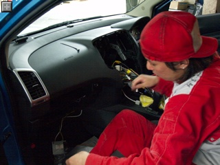
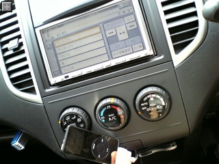
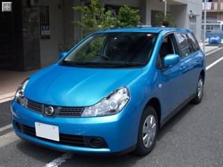
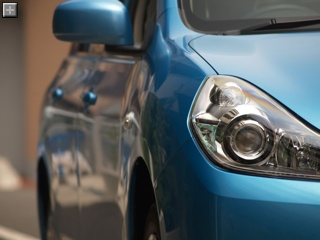
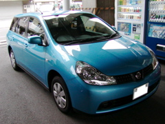
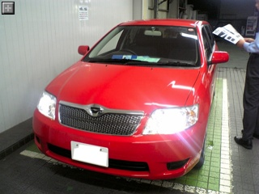
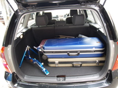

チコチコと遊んでましたが、リッジレーサー７のメインであるグランプリ14戦全戦をクリアしました。
今のとこプレステ３で持っているゲームはこれだけですがなかなか楽しめてます。
ゲーム内容はPSPのリッジレーサーズと似ていて、何故かドリフトをすると溜まって、消費すると一気に加速できるニトロシステムがあります。
それから新しいのは後方車の最高速度が上がるスリップストリーム。
車の真後ろに付くほど加速しやすくなるので、邪魔をしてやろうとしっかりブロックするとライバルが一気に加速して抜かれてしまうかも、という良い具合のジレンマを生み出してくれます。
アクセルを踏んでいればそう簡単にはスリップしない強固なグリップと、危ない！と思ったらドリフトすればなんとなくコースの通りに走ってくれる、リアルさよりも爽快さを重視した車の挙動は健在。
普通前後輪ともグリグリ滑るのようなドリフトしていたら曲がれるコーナーも曲がれないと思いますが、やはりリッジレーサーはドリフトした者勝ちです。
ゲームの難易度はグッと高く、普通にノーミスで走っていても勝てないレースが平気であります。コーナリングやスリップストリーム、ニトロ発動のタイミングなどうまくやらないと全然勝てません。
画面はさすがにプレイステーション３なだけあってメチャメチャキレイ！
リアル、というよりも「イカニモCG」的なキレイさを追究しているのかもしれません。
写実感でいうと無料でダウンロードして遊べるグランツーリスモHDの方がよりリアルです。
あと、オンラインで対戦できるのは嬉しい誤算でした。さすがにコンピュータ相手と違って手に汗握る勝負が楽しめます。
見知らぬ人々はとても上手で全く相手になりませんが・・。
友達のIDを登録しておくとオン・オフライン状況がわかり、その場で対戦を誘って勝負する、といったことが気軽にできるようになっています。
ネットゲーム特有のタイムラグもうまく気にならないようにできていて、車がワープしてしまったり、あらぬ方向へ走り続けてしまったりということもありません。
当たり判定もうまい具合にごまかして自然に感じられます。
ちょっと残念なのはリッジレーサーの「いつもの」曲とコースが選べないこと。
「いつものコース」はグランプリ全戦クリアで選択できるようになりましたが、曲は出てきません。
もう少しゲームを進めると出てくるんでしょうか？
さて、iPod の音が出ない件ですが、担当セールスマンに電話しました。
問題はたぶんこれ、配線ミス。
・パイオニア カーAV&オーディオ>ｉＰｏｄ® アダプター CD-IB10/CD-IB10II>故障かなと思ったら
接続して操作はできますが、音が出ません。故障ですか？
「１ヶ月点検で直します」とか言われる覚悟をしてたけど速攻整備工場に連絡してくれて、当日中に整備士の予定を確保してくれて直して貰いました。

修理中
HDDナビなんでCDを取り込むこともできるけどやっぱりiPodから直接再生できるのは便利！
整備工場に車もってく手間はかかったけど、修理を見学させてもらってコンパネの開け方がわかったので良しとします。

ナビで iPod 再生中
ちなみに載っけたナビはパイオニアの HDD の楽ナビで MD プレーヤがついてないタイプ - AIVC-HRZ08。
・AVIC-HRZ08
{kind=link}
{kind=link}
首を３パーセクくらいに長くしながら待ちつつ３週間。
ようやく納車となりました。

日産自慢のキングフィッシャーブルーはまるでドラえもん色！
駐車場でも目立って良いです。

納車時にチェックしたのは
色はもちろんのこと、今回オプションとしてつけたフロアマット、HIDランプ、トノカバーが装備されていることを確認。
あと約束通り満タン納車となっていることも確認。
・走行距離は？
あんま長い(50km以上とか)ようだったら一応説明を求めるべきだそうで。
12kmくらいだったので特に問題なし。
・外装、内装に問題はない？
塗装ハゲ、シワ、キズ、シートのほつれなどないかざっとみました。
ドアのエッジ部分に２カ所塗装ハゲを発見！あらら・・。
１ヶ月点検時に補修してもらうことに。
・ナビ等の取り付けに問題はない？
取り付けをお願いしていたナビ(ビーコンユニット、GPSアンテナ、バックカメラ、iPodケーブル、携帯ケーブル、マイクも）、ETCユニットがついていることを確認。
バックカメラは一応シフトをバックにして写ることも確認。
といった点。
その後ドライブを始めて気が付いた点としてはナビに接続した iPod がコントロールはできるけど音がでないこと。
ボリュームを最大にしても何にも聞こえない・・・。
調べてみると iPod を最新版にすることで解消されるという話があったので早速アップデート。
・CD-IB10についてのクチコミ
http://www.kakaku.com/bbs/Main.asp?PrdKey=70203510729
しかし解消されない。さて、外れをつかんだかと思いもう少し調べてみると本家ホームページに見つけました。
・接続して操作はできますが、音が出ません。故障ですか？
http://faq.pioneer.co.jp/faqnavi/piofaq/ib10/faq.cgi?parent=3584;id=13776;session=bf1ad458cbaa35d621dd5326339183f7;linksource=3586
どうも接続ミスのようで。
明日ディーラーに電話して直して貰おうっと。
{kind=link}
{kind=link}
今日はウィングロードの試乗２回目。
乗る車は希望色のキングフィッシャーブルーで、エアロじゃない CVT モデル。

水色と青の中間くらい、うっすら黄色がまざったような（気のせい？）色はカタログでみた以上に綺麗！
今日は荷物を積まずに乗ってみたけどもやはり CVT はスムースで気持ちよいです。
排気量が現在のブルーバードの2.0リットルに比べ、1.5リットルとやや少なめなものの信号待ちからのスタート時にややがんばっている感じがする程度で遜色ないです。
さて、値引き交渉は「トヨタもがんばってくれてるので迷わずに済む値段を出してください！」とお願いしました。
やはり「いくらなら決めてもらえます？」と聞かれ「165万！」
「ははは・・。それは無理ですががんばります」
しばらく待たされると 185 万という値段が出てきました。
いきなり許容範囲内の値段です。
もう一声いけるかなー？ということで
「うーん、175万にはならない？」->「183万」
「うーん、177万にはならない？」 -> 「180万！もう勘弁！」
「ではその値段でヨロシクお願いします！」と言いながらガシっと握手を交わしました。
で、握手を交わしたまま「ETC機器の載せ替えもその値段でお願いします」と最後のおねだり。
苦笑しながらも Ok してくれました。
車庫証明はなんとしてもやらせてください、ということなのでお願いしてしまいましたが、ガソリン満タン納車、持ち込みナビ取り付けにはしてくれることに。
実質31万円引き位となり満足。
もっと粘りたければ Blue Stage と Red Stage で合い見積もりをすれば良いのでしょうが、早く決めたいので今回はやりませんでした。
納車は６月末から７月頭になるとのこと。楽しみ楽しみ。
車の値引き交渉は期間が長ければ長いほどがんばってくれるでしょうが、消耗戦で時間を消費しすぎるのも「ケチケチ顧客リスト」入りしてしまうのもつまらないので土曜日には決めてしまうつもりです。
ボーナス商戦終盤まで待つとかすれば状況は変わるでしょうが、フィールダーはこれ以上の大幅な値引きはないものと踏んで、あとは日産からの値引き交渉の準備にかかりました。
まず、カローラフィールダーとウィングロードの見積書の項目を excel のシートに並べて、車両本体以外にどこに値段の差があるのか比較しました。
手数料的な値段が含まれている諸経費分などは特に同程度まで値引きしてくれるはずです。
で、項目を比較してトヨタの方が安くなっている項目はトヨタの値段を、日産の方が安くなっている項目は日産の値段を集め、ウィングロードの車両価格と、より多めにでているトヨタの値引き分を合わせた希望見積もりを作りました。
例えば現在出ている見積書がこんな感じだったら
・カローラフィールダー / ウィングロード
1. 車両本体 150万 / 160万
2. 車両本体値引き 23万 / 15万
3. ブルーバード下取り 3万 / 4千
4. 諸経費30万 / 諸経費29万
計 154万円 / 計173.6万円
こんな感じに合わせた希望の見積もりを作ります。
・ウィングロード希望見積もり
1. 車両本体 160万
2. 車両本体値引き 23万
3. ブルーバード下取り 3万
4. 諸経費29万円
計163万
#実際には諸経費の明細も全項目並べて計算しました
で、オプションにHIDランプに加えインテリジェントキー、ポリマーコーティング、３年間のメンテナンス代をまとめて安くするメンテプロパック等を合わせ、値引きを含まない希望見積もりを作ると210万くらいになりました。
交渉の最終段階では「車両・オプションの値引き額」ではなく、総額いくらにするかで交渉することが多いようです。
「全部合わせていくらなら決めて頂けますか？」と聞かれればまず無理であろう安すぎる値段を言うことにし、最終的に納得するラインは別に設定しました。
というわけで、「165万なら決めます」と言いつつ、185万くらいでたら決めることにするいったとかんじ。
実質25万引き程度を目標設定です。
さらに、最後にお願いする実質値引き手段のリストを作っておきます
・ガソリン満タン納車
->何も言わなければ20リットルくらいしかガソリン入れてくれないそうです
・引き取りに行くので納車代サービス
->ディーラーが近ければ大抵自分で取りに行くと思いますが
・車庫証明は自分でとるので法廷預かり代金、手数料引いてください
とかとか。
フィールダーを買うことになれば親がひいきにしている東京カローラで買うことは決めています。
しかし実家近くのそのディーラーまでは１時間くらいかかるので最終段階に入るまでは埼玉のカローラに通うつもりでした。
が、「がんばりますので是非とも相談させてください！」とのセールスマンのお願いがありウィングロードかカローラフィールダーか定まらないうちに行くことにしました。
車は赤の４０周年特別仕様車を用意してくれました。

青が本命だけど、赤もなかなか鮮やかで良い感じ。
で、肝心のお値段だけれども埼玉カローラでだしてもらった値段はそこそこがんばっているようで、「今日決めてもらえるなら一層勉強できます！」の一点張り。
うーん、「お子さんがご購入ということであれば勉強させて頂きます！」といつも繰り返していると聞いていたけどイマイチな対応でがっかり。
具体的な値段が出てこないことには検討のしようがないので、お断りして家路に着きました。
{kind=link}
今日は午前日産、午後は昨日に続き再度トヨタ。
今度は妻と一緒で、昨日と同じ黒のフィールダーに試乗させてもらいました。
妻の印象はだいたい自分と同じで「悪くはない。」
ウィングロードと同じく弓をドカドカ積んでみました。
ラゲッジスペースのゆとりに違いはまり感じられず、十分ゆったり。

フィールダーと比べてみてウィングロードの細かい使い勝手の良さが目立ちました、特に後部座席周り。
スライド機構があったり、ワンタッチで格納できたり、リクライニングが１０段階あったり。
よほど値段に差をつけてもらえるのであればフィールダーに、同程度だったら断然ウィングロードにという方向性が確実になりました。
「日産に負けないようがんばってください！」とお願いしたら、実質23万円引きくらいの値段が提示されました。
さて、日産はどれくらいがんばってくれるでしょうか。